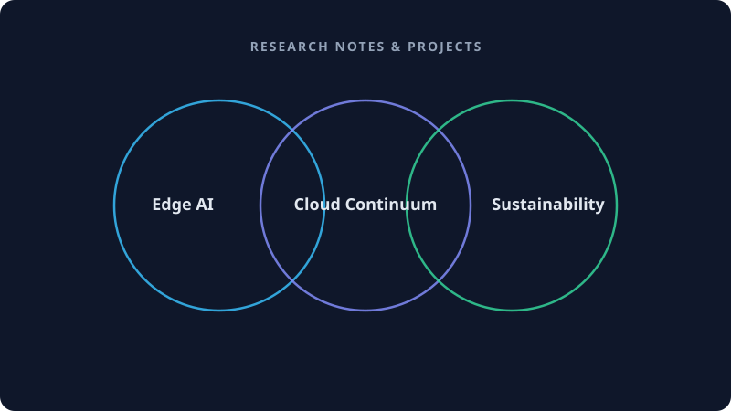

Starting a Bilingual Research & Project Log
Why I am opening a bilingual space to document ongoing projects, experimental notes, and reflections across Edge AI and sustainable computing.

Welcome to this new section of my website. Alongside formal papers and conference proceedings, much of the day-to-day work in research and software engineering happens in between: testing hypotheses, building small prototypes, and comparing architectural trade-offs.
What I Will Share Here
- Ongoing projects: design choices, benchmarks, and lessons learned while building tools and prototypes.
- Research reflections: short notes on Edge-Cloud continuum architectures, energy-aware scheduling, and applied AI.
- Visualizations: lightweight charts and diagrams to make trade-offs concrete.
Good research communication is not only about final results, but also about making the process legible.
Every post published here is written in both English and Italian so that colleagues, students, and anyone curious about these topics can follow along easily.